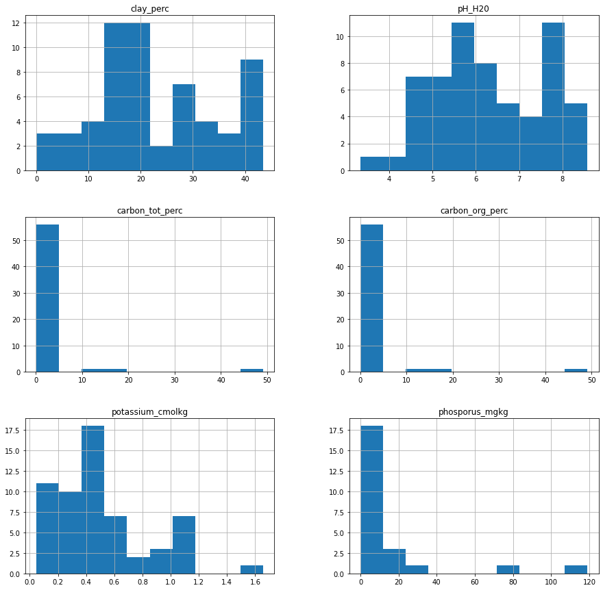
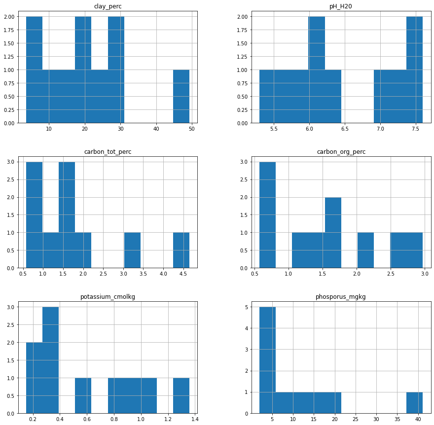

import matplotlib.pyplot as plt
from mirzoo.data.loading import get_spectra, get_wetchem
import warnings
warnings.filterwarnings('ignore')Exploratory Data Analysis
# Data loading
fname = './files/RT_STD_allMIRspectra_raw.csv'
orgs, smp_ids, wns, spectra, df_sp = get_spectra(fname)
fname = './files/RT_wetchem_soildata.csv'
y, y_napt, df = get_wetchem(fname)df_sp.head()| organization | sample_id | 600 | 602 | 604 | 606 | 608 | 610 | 612 | 614 | ... | 3982 | 3984 | 3986 | 3988 | 3990 | 3992 | 3994 | 3996 | 3998 | 4000 | |
|---|---|---|---|---|---|---|---|---|---|---|---|---|---|---|---|---|---|---|---|---|---|
| 0 | Agrocares | RT_01 | 2.14711 | 2.13471 | 2.12274 | 2.11369 | 2.10487 | 2.09844 | 2.09177 | 2.08036 | ... | 1.09917 | 1.09898 | 1.09877 | 1.09851 | 1.09827 | 1.09811 | 1.09797 | 1.09797 | 1.09797 | 1.09797 |
| 1 | Agrocares | RT_02 | 2.32404 | 2.33516 | 2.34558 | 2.35114 | 2.35641 | 2.35855 | 2.36069 | 2.36288 | ... | 1.24065 | 1.24042 | 1.24015 | 1.23977 | 1.23938 | 1.23896 | 1.23861 | 1.23861 | 1.23861 | 1.23861 |
| 2 | Agrocares | RT_03 | 2.50423 | 2.50755 | 2.50973 | 2.50403 | 2.49913 | 2.50261 | 2.50697 | 2.52910 | ... | 1.25036 | 1.24959 | 1.24877 | 1.24777 | 1.24679 | 1.24585 | 1.24505 | 1.24505 | 1.24505 | 1.24505 |
| 3 | Agrocares | RT_04 | 2.30902 | 2.29788 | 2.28667 | 2.27490 | 2.26393 | 2.26128 | 2.25905 | 2.26521 | ... | 1.15192 | 1.15176 | 1.15158 | 1.15132 | 1.15106 | 1.15080 | 1.15058 | 1.15058 | 1.15058 | 1.15058 |
| 4 | Agrocares | RT_05 | 2.28727 | 2.28852 | 2.29013 | 2.29434 | 2.29856 | 2.30286 | 2.30700 | 2.30782 | ... | 1.16109 | 1.16106 | 1.16102 | 1.16095 | 1.16086 | 1.16070 | 1.16056 | 1.16056 | 1.16056 | 1.16056 |
5 rows × 1703 columns
What are the organizations involved?
df_sp['organization'].unique()array(['Agrocares', 'Argonne', 'ETH_alpha_1', 'ETH_alpha_2', 'ETH_vertex',
'IAEA_jun2022', 'KSSL', 'LandCare', 'Lesotho', 'MSU', 'OSU',
'UGhent', 'UIUC', 'UWisc_fine', 'Woodwell_alpha',
'Woodwell_vertex'], dtype=object)How many samples per organization?
df_sp.groupby('organization').size()organization
Agrocares 70
Argonne 70
ETH_alpha_1 70
ETH_alpha_2 70
ETH_vertex 70
IAEA_jun2022 68
KSSL 70
LandCare 70
Lesotho 70
MSU 70
OSU 70
UGhent 70
UIUC 70
UWisc_fine 70
Woodwell_alpha 70
Woodwell_vertex 70
dtype: int64df_wc.head()| sample_id | source | clay_perc | pH_H20 | carbon_tot_perc | carbon_org_perc | potassium_cmolkg | phosporus_mgkg | |
|---|---|---|---|---|---|---|---|---|
| 0 | RT_01 | KSSL | 6.28199 | 4.8525 | 0.61170 | 0.61170 | 0.26906 | 5.59999 |
| 1 | RT_02 | KSSL | 4.44442 | 4.5850 | 3.48602 | 3.48602 | 0.23349 | 19.28365 |
| 2 | RT_03 | KSSL | 42.19991 | 4.2300 | 0.25716 | 0.25716 | 0.29109 | NaN |
| 3 | RT_04 | KSSL | 17.10475 | 6.5300 | 1.97755 | 1.97755 | 0.49925 | NaN |
| 4 | RT_05 | KSSL | 17.22985 | 6.4700 | 2.14765 | 2.13584 | 0.59977 | NaN |
Where is wet chemistry coming from?
df_wc['source'].unique()array(['KSSL', 'NAPT'], dtype=object)What are analytes distribution for KSSL & NAPT wet chemistry?
- KSSL
fig = plt.figure(figsize = (15,15))
ax = fig.gca()
df_wc.query('source=="KSSL"').hist(ax = ax);
- NAPT
fig = plt.figure(figsize = (15,15))
ax = fig.gca()
df_wc.query('source=="NAPT"').hist(ax = ax);